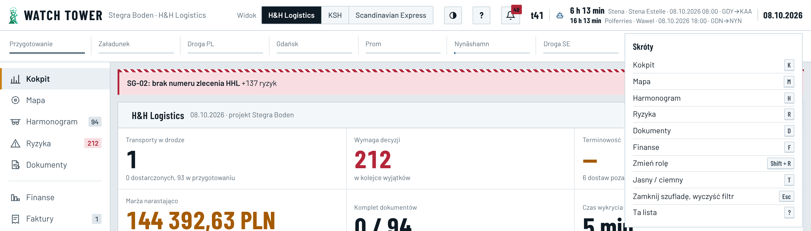
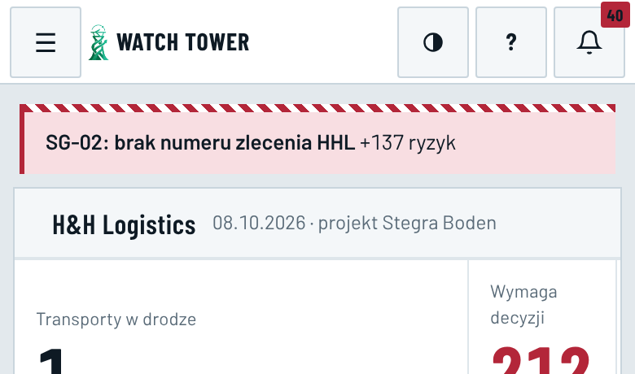
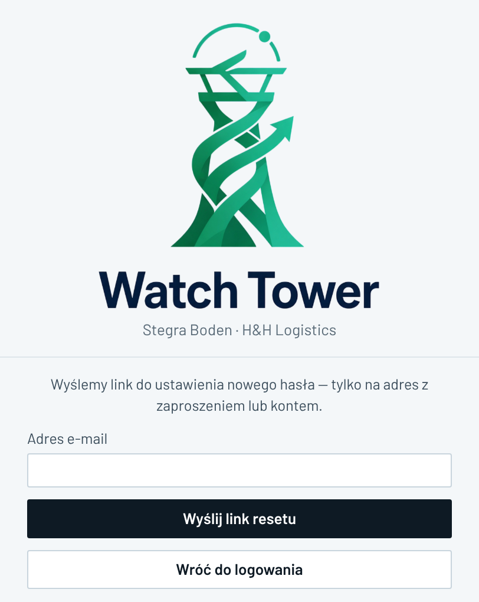
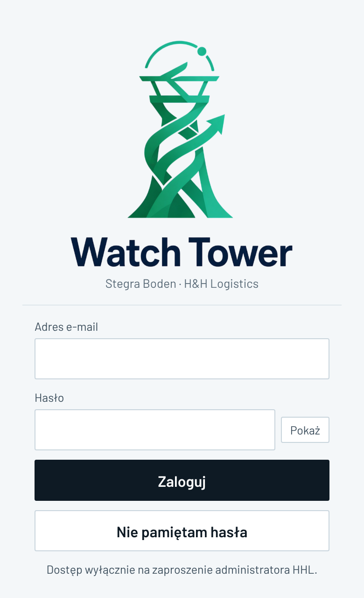

E37 · Pasek górny, pomoc, komunikaty, logowanie, zaproszenie, pierwsze wejście
„Dziś” — zrzuty produkcji 08.10, 01:47 (konto Operacje HHL; ekran logowania bez logowania) i dane z bazy · „Po zmianie” — rejsy, liczby kont i daty z bazy; osoby, telefony i treści komunikatów oznaczone „Przykład” są zmyślone
Dziś · komputer · pasek górny i przycisk „?”

Pasek: logo i „Stegra Boden · H&H Logistics”, przełącznik „Widok”, motyw, „?”, dzwonek 40, tydzień t41, dwa najbliższe rejsy z odliczaniem, data. „?” otwiera listę 10 skrótów klawiszowych, w tym „Zmień rolę Shift + R”. E-mail konta, rodzaj konta i „Wyloguj” są na dole lewego menu.
Dziś · telefon, logowanie i fakty z bazy
Telefon · pasek

☰, logo, motyw, „?” (skróty klawiszowe), dzwonek. Bez tygodnia, rejsów, daty, firmy i „Widoku”.
„Nie pamiętam hasła”

Przed wysłaniem sprawdza adres. Gdy adresu nie ma — „Brak zaproszenia — skontaktuj się z HHL”. Po wysłaniu — „Otwórz go w tej przeglądarce”, choć link działa w każdej (sendAuthEmail.ts l. 38).
Telefon · logowanie

E-mail i hasło (min. 12 znaków), „Pokaż”, „Nie pamiętam hasła”, „Dostęp wyłącznie na zaproszenie administratora HHL”.
Fakty 08.10
- Instrukcja to zwinięty panel na końcu Opcji › „Preferencje i pozostałe” (HHL) i Ustawień (KSH, SCX). Treść jest sprzeczna z decyzjami: „CMR i POD” (bez POD — 19:51), „Moje zadania” (→ Do zrobienia — 19:11), „Decyzje” (E7), „Importuj XLSX” (automatycznie — E38), „utwórz link kierowcy” (link kierowcy wyłączony w bazie od 03.10).
- Komunikat HHL (Opcje › „Komunikat dla wszystkich”): baner nad treścią strony. Aplikacja czyta go tylko przy wejściu, więc zalogowani zobaczą go dopiero po przeładowaniu. Nie da się go zamknąć. W bazie są 2 próbne z 01.10 (22:03 i 22:04), dziś nie ma żadnego.
- Komunikaty błędów: „Brak dostępu · OK” przy linku do zamkniętej sprawy; „Wysyłka e-maili nie jest jeszcze skonfigurowana (SMTP Resend — krok właściciela)”, choć poczta działa od 26.09; po końcu sesji „zaloguj się ponownie linkiem z e-maila”, choć logowanie jest hasłem.
- Weryfikacja dwuetapowa: wymaganie dla administratorów wyłączone od 27.09, 0 z 15 kont ma zapisany kod z aplikacji.
- Zaproszenie (tylko Administrator): e-mail, firma, rodzaj konta (z „KSH — administrator”); bez imienia, nazwiska i telefonu. Wysyłany jest link logowania, nie e-mail „zaproszenie”: 0 z 15 kont ma znacznik zaproszenia, 3 konta z 29.09 dostały e-mail „potwierdź adres”. Zaproszenie w bazie jest ważne 7 dni, a link w e-mailu najwyżej 24 h (limit Supabase). Na liście jest tylko „zaproszenie oczekuje” i „Cofnij”, bez daty i bez „Wyślij ponownie”.
- Konta: 15, w tym 13 aktywnych; 8 bez ustawionego hasła. Konto dyspozytora SCX z domeny przewoźnika: link otwarty 29.09, hasła nie ustawił, dziś 0 sesji. Konta KSH są tylko testowe (3 bez konta logowania).
- „Działaj jako”: zmiany SG-01 i SG-02 z 06.10, 23:00–23:07 (statusy, numery, wymiary, rejs) są zapisane pod nazwą dyspozytora SCX. Zrobił je Administrator HHL („Działaj jako” 22:59–23:08). Tak samo zmiany numeru SG-02 z 23:11–23:14 pod dwoma kontami Operacji HHL. Historia transportu tego nie pokazuje.
- Pierwsze wejście: link z e-maila → „Dalej” → hasło → od razu Kokpit. Nie ma powitania, prośby o telefon (E6), powiadomień ani wskazówki instalacji na telefonie (ta jest tylko w Opcjach przy włączaniu push na iPhonie). Próba 07.10: zaproszenie 14:10:11, link 14:10:34, hasło 14:11:00.
Po zmianie · komputer · pasek górny, konto, pomoc
WATCH TOWERStegra Boden
PodglądHHLKSHSCX
t41⛴6 h 13 min Stena Estelle · 08:00 · Gdynia → Karlskrona16 h 13 min Wawel · 18:00 · Gdańsk → Nynäshamn08.10.2026
?
🔔40
ANAnna NowakHHL · Operacje▾
Podgląd: tak widzi KSH Użytkownik. Nic tu nie zapiszesz. Wróć do HHL
Działasz jako: dyspozytor SCX Przykład Każda zmiana zapisze się w historii jako „[imię i nazwisko administratora] (HHL) jako dyspozytor SCX”. Zakończ
Komunikat HHLProm Stena Estelle 09.10 wypływa o 10:00 zamiast 08:00. Awizacje bez zmian. Przykład· do 09.10, 12:00Zamknij
Kolejność pasków pod paskiem górnym: podgląd albo „Działaj jako” (tylko HHL), potem komunikat HHL. Konto (imię, nazwisko, firma, rodzaj) jest po prawej, nie na dole lewego menu. „Motyw” przechodzi do menu konta. Projekt bez nazwy firmy — firma jest przy nazwisku. „Podgląd” widzi tylko HHL (E9).
PomocOperacje HHL✕
Jak pracujęCo nowegoKontaktSkróty
- Kokpit — co jest w trasie, Twoje sprawy w Do zrobienia, załadunki w 7 dni.
- Ryzyka › Do zrobienia — sprawy HHL: numer zlecenia HHL, wymiary zestawu, daty KSH bliżej niż 5 dni.
- Harmonogram aktualizuje się sam z pliku KSH (po E38). Numer zlecenia HHL wpisujesz w panelu transportu.
- Dokumenty — zezwolenia, polisy i podpisany CMR z terminami.
- Faktury — sprawdzasz faktury SCX, wystawiasz faktury HHL dla KSH, oznaczasz „Opłacona”.
- Opcje masz w podglądzie. Zmiany robi Administrator HHL.
Treść zależy od firmy i rodzaju konta (5 wersji) i zmienia się razem z menu. Kroki to skróty — kliknięcie otwiera to miejsce.
KontaktPrzykład
Operacje HHL · Anna Nowak
+48 ••• ••• 123 · operacje@…
ZadzwońKontakt bierze się z kont Operacji HHL z telefonem (E6) — bez wpisywania osobno.
Komunikaty — dziś i po zmianie
| Dziś | Po zmianie |
|---|
| „Brak dostępu · OK” — link do sprawy, która wygasła | „Ta sprawa jest już zamknięta (wygasła 06.10).” + „Otwórz transport” |
| „Tę decyzję rozstrzyga inna firma.” — sprawa innej firmy | „Tę sprawę prowadzi SCX. Możesz ją tylko podejrzeć.” |
| „Wysyłka e-maili nie jest jeszcze skonfigurowana (SMTP Resend — krok właściciela)” | „Nie udało się wysłać e-maila. Spróbuj za kilka minut.” Szczegóły trafiają do Stanu systemu. |
| „Sesja … została zakończona — zaloguj się ponownie linkiem z e-maila” | „Sesja na tym urządzeniu została zakończona. Zaloguj się e-mailem i hasłem.” |
| Reset: „Brak zaproszenia — skontaktuj się z HHL” albo „… Otwórz go w tej przeglądarce” | Zawsze: „Jeśli adres ma konto, wysłaliśmy link. Działa na każdym urządzeniu przez 1 h.” |
| „Link wygasł lub został już użyty. Poproś o nowy.” | „Link wygasł.” + przycisk „Wyślij nowy link na ten adres” (gdy konto albo zaproszenie jest ważne) |
| Komunikat HHL widoczny dopiero po przeładowaniu, bez zamknięcia | Pojawia się w ciągu minuty, z „Zamknij” (zapamiętane dla osoby) i datą końca |
Czas ważności linku pochodzi z ustawień logowania: w repozytorium 1 h, na produkcji do sprawdzenia przy budowie. Bez kodów i nazw usług w treści.
Opcje › Komunikat HHLzmienia Administrator HHL · Operacje HHL podgląd
Historia · z bazy
01.10, 22:04 · Administrator HHL„Witamy w Onmi Watch Tower. To jest komunikat testowy.” · HHL, KSH, SCX · zdjęty 02.10, 14:50
próbny01.10, 22:03 · Administrator HHL„Witamy w Omnie Watch Tower…” · zdjęty po 5 s
próbny
Po zmianie · zaproszenie i lista kont (Opcje › Użytkownicy)
Zaproś osobętylko Administrator HHLPrzykład
Konta i zaproszenia15 kont · 13 aktywnych · 8 bez hasła (z bazy)
Dyspozytor SCX · @scandinavian.com.pllink otwarty 29.09, hasła nie ustawił · 0 aktywnych sesji
niedokończoneWyślij link do hasła
Anna Nowak · KSH Użytkownik Przykładzaproszenie wysłane 09.10, 10:15 · ważne do 16.10 · e-mail doręczony
wysłaneWyślij ponownieCofnij
Jan Kowalski · SCX Użytkownik Przykładzaproszenie z 01.10 wygasło 08.10
wygasłoZaproś ponownie
Operacje HHL · @hhlogistics.plaktywne · ostatnie logowanie 05.10 · bez imienia i telefonu
brak telefonuZmień
Stan przy każdej osobie zdaniem: wysłane / niedokończone / wygasło / aktywne. Daty z bazy. Konto bez telefonu na czerwono (E6). Zmiana rodzaju konta zgodnie z E14.
Po zmianie · telefon · zaproszona osoba (link → hasło → pierwsze wejście) i pasek
1 z 4
Zaproszenie do Watch Tower
Sebastian Bożek z H&H Logistics zaprasza Cię do systemu kontroli transportów Śrem → Boden.
OsobaAnna NowakFirmaKSHKontoUżytkownik
Przykład
Dalej — ustaw hasło
„Dalej” chroni link przed skanerami poczty (jak dziś).
2 z 4
Ustaw hasło
Hasło••••••••••••••Pokaż
14 znaków — dobrze (min. 12)
Powtórz hasło••••••••••••••✓
Zapisz hasło
Dalej logujesz się e-mailem i hasłem. Sesja na tym urządzeniu trwa do roku.
3 z 4
Twoje dane
Imię i nazwiskoAnna Nowak
Telefon (wymagany)+48
Widzą go osoby, które prowadzą Twoje sprawy (E6).
Dalej
4 z 4
Powiadomienia i telefon
Dostajesz: zmiany dat, dostawy na plac, faktury do sprawdzenia (Dla mnie, E11).
Włącz powiadomienia na tym telefonie
iPhone: najpierw Udostępnij → Dodaj do ekranu głównego, potem otwórz Watch Tower z ikony.
Android: Zainstaluj aplikację.
Zaczynam
Kroki 4 i pomoc można pominąć — wracają w „Pomoc” i „Moje konto”. Krok 3 (telefon) jest wymagany.
WATCH TOWER⛴ 6 h 13 min
Stena 08:00🔔40AN
Komunikat HHL: Prom Stena Estelle 09.10 wypływa o 10:00. Przykład✕
Telefon: logo, najbliższy prom (dotknięcie → oba rejsy, tydzień, data), dzwonek, konto. „?” i motyw w menu konta, skrótów klawiszowych nie ma. Menu stron — dolny pasek (E8).
KokpitHarmonogramRyzykaDokumentyWięcej
Link wygasł
Link w e-mailu działa 24 h. Twoje zaproszenie jest ważne do 16.10.
Wyślij nowy link na anna.nowak@…
Nowy link przychodzi w ciągu minuty. Problem? Zadzwoń do Operacji HHL.
Przykład
Logowanie · 2FApytanie 1
Wpisz 6 cyfr z aplikacji w telefonie (np. Google Authenticator).
• • • • • •
Potwierdź